摄影与导出
摄影棚里摆姿势，再开抗锯齿和 Bloom 拍照
这条是 VRoid Studio 的 Photo Booth：自己摆姿势，把抗锯齿和 Bloom 打开，再按快门。窗口标题栏只写着 VRoid Studio，没有版本号。画面左侧戴眼镜的红发头像是讲解者的摄像头，不是棚里那个模型。
进棚之前模型已经换成红裙。口播说衣服在 booth.pm，作者是 ArgamaWitch，并说自己这时才发现脖子从 1.0 起就偏长，改了一下脖子。改脖子的滑杆没有给特写。口播里的 1.0 说的是这具模型，不是窗口上的版本。界面名称按画面上的英文写，不改成别的版本的中文。
先开摄影棚
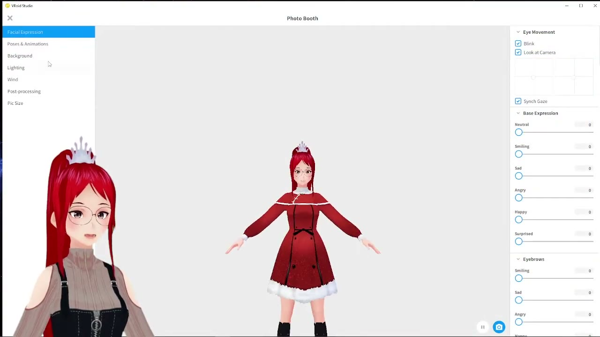
视频剪进来时已经在摄影棚，灰背景，人还是默认张开的站姿。左侧一列是 Facial Expression、Poses & Animations、Background、Lighting、Wind、Post-processing、Pic Size。这一帧停在表情页。右边 Eye Movement 里 Blink、Look at Camera 已经勾着，下面还有 Synch Gaze；Base Expression 的 Neutral、Smiling、Sad、Angry、Happy、Surprised 都停在 0。主界面右上角的相机图标这段没有拍到按下。
在 Background 里导入背景
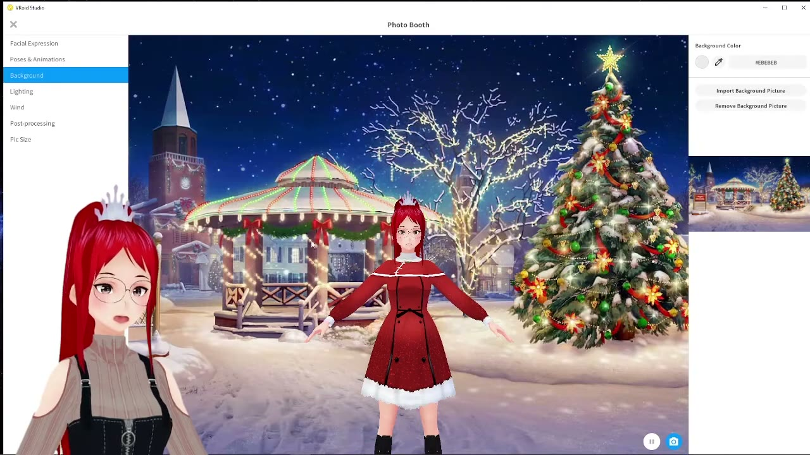
口播说在 Background 下面导入背景。画面上文件框没有停住，面板里已经有缩略图，灰底换成夜景。Background Color 旁边有一格颜色，这段没有去改它。口播还说，图如果只自己用、页面没有另外声明，她就这么用；拿去卖或只发给付费订阅，就要核对授权，或者自己做背景。这是口播，画面上没有授权开关。
下拉菜单里选 Posing
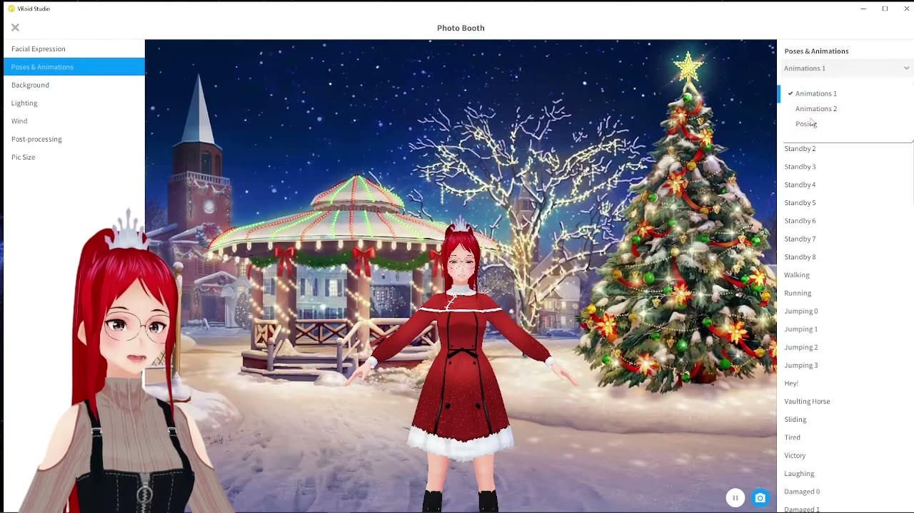
口播说顶部小下拉里有两套姿势，或者 Posing，要选的是 Posing。画面上这一项叫 Poses & Animations。下拉当前是 Animations 1，其下是 Animations 2 和 Posing，再往下是 Standby 2 起的一串动画名，包括 Walking、Running、Jumping、Hey!。点 Posing 之后下拉收成 Posing，人还是张开站着，姿势本身还没变。
勾上 Show Controller
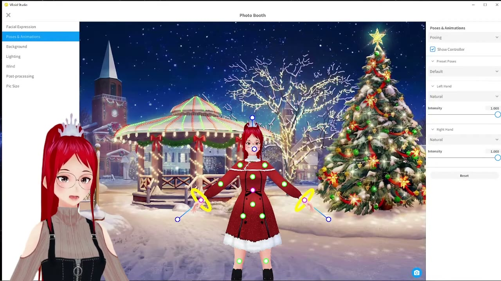
勾上 Show Controller，身上出现一串控制点：头上、脸上、肩肘腕、胸口、髋和膝。手腕外面有黄圈，手边还有一条线拉到一个点。口播说这些点能改方向和位置，部位包括手臂、腿、头、髋、手和脚。Left Hand 和 Right Hand 这时都是 Natural，两根 Intensity 滑杆在最右端，读数是 1.000。底部有 Reset。口播说这些点有时跟鼠标过于灵敏，有时几乎不动，而且不能撤销，摆好的部位不要再去碰。不能一步步撤销是口播；画面上能按的是 Reset，那是把姿势复位，不是退回上一下。
旁边打开姿势参考
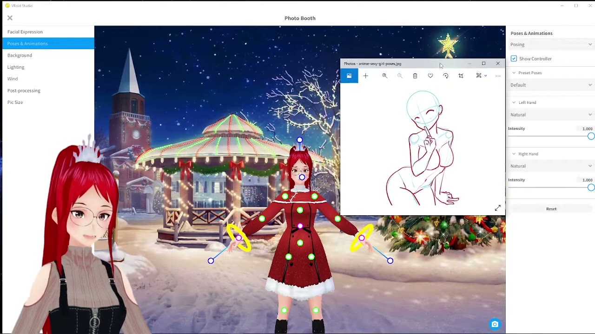
口播说参考是从网上找的，不会把整套姿势照搬，只取一点灵感。画面上是另一个窗口里的线稿，不是 VRoid 的菜单。模型并没有跟着坐下去。口播还说，摆自定义姿势时要看参考，做出来才比较自然。
表情改在 Facial Expression
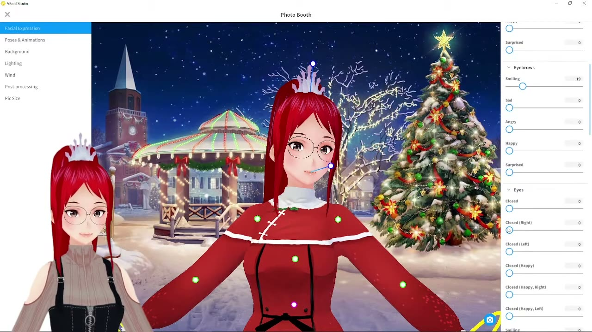
口播说她本来先动头，随后才改去先做表情。这一帧身体还张着，脸已经不是刚才的平视。表情页从上到下是 Eye Movement（Blink、Look at Camera、一块视线格子、Synch Gaze）、Base Expression（Neutral、Smiling、Sad、Angry、Happy、Surprised），再往下是 Eyebrows 和 Eyes。这一帧眉的 Smiling 离开了最左端，旁边能看见的其它项仍停在 0。口播说这些滑杆看起来和做自定义表情时一样，但离开摄影棚就不会导出，也不会写进模型。这是口播，画面上没有导出按钮。
拖控制点，手型改下拉
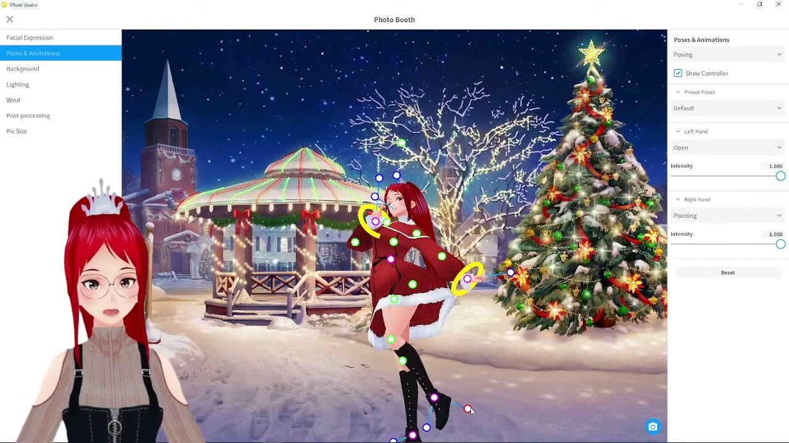
拖身上的点，把人转成侧一些的姿势：一条腿抬起，一只手收到脸颊附近，另一只手向外打开。手不是用圆点捏出来的。Left Hand 下拉从 Natural 改成 Open，Right Hand 改成 Pointing。两根 Intensity 仍停在最右端。Preset Poses 还是 Default，没有换一套预设姿势。口播说点很不好控制，摆了很久；时长是口播，画面是剪过的。
关掉控制器再看姿势
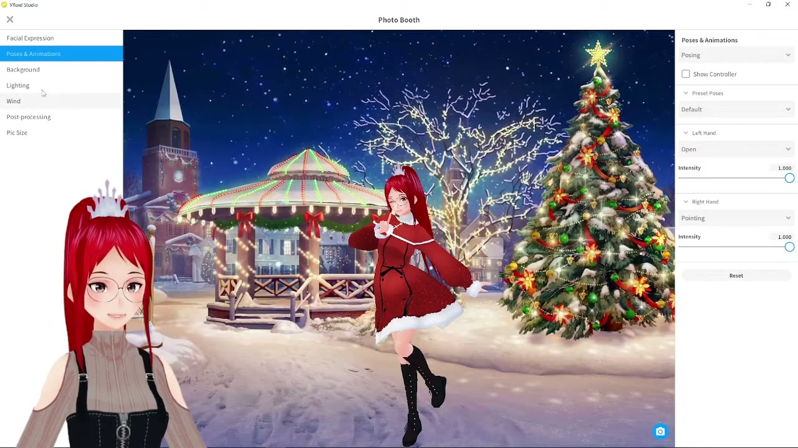
拍照前把 Show Controller 取消，圆点消失，衣服和背景上就只剩姿势。Lighting 和 Wind 在左侧，这段没有打开。口播说姿势满意之后，再给真正的照片摆位置。这一帧人已经站在亭子和树中间。
抗锯齿选 High，再勾 Bloom
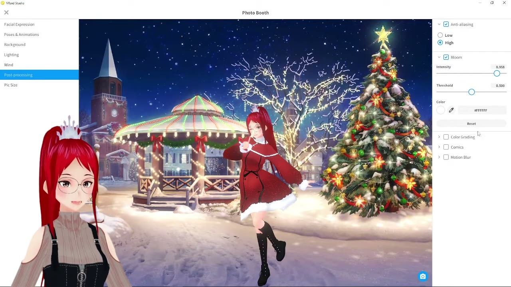
口播说拍照前先做两件事：抗锯齿调到 High，再用 Bloom，让圣诞场景有一点暖、有一点散开的光。画面上 Anti-aliasing 的 High 是实心圆点。Bloom 在勾上之前是空的；勾上之后多出 Intensity、Threshold 和 Color。Intensity 是 8.958，圆点靠近右端。Threshold 是 0.500。Color 是 #FFFFFF。Color Grading、Comics、Motion Blur 都空着。口播说还有别的效果，但今天都不合适。人的姿势没有因为后期改变，树顶的星和彩灯的光晕更散。
预设尺寸选 4K，再按快门
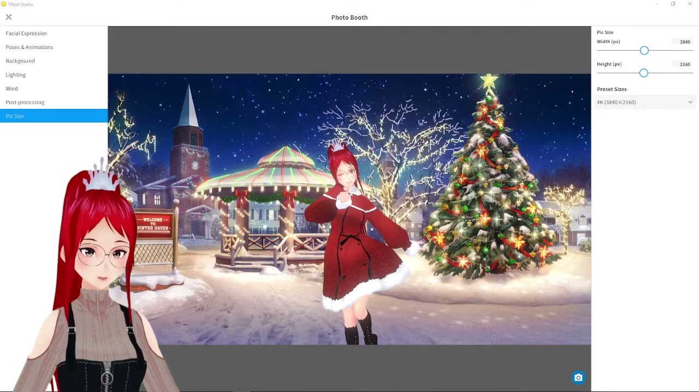
口播说去画面尺寸，在 Preset Sizes 的下拉里选 4K。下拉打开时，先看见的是 Adjust to window size（当时打着勾）、XGA (1024×768)、HD (1280×720)、Square (1080×1080)。选完之后收成 4K (3840×2160)，宽和高两格跟着变成 3840 和 2160。预览上下出现灰边，人在画幅里变小，左边露出一块写着 WELCOME TO WINTER HAVEN 的牌子。右下角蓝色圆按钮是拍照。口播说要多拍几张，并把角色转一转，不要只留自己觉得最好的那一张。画面上后来姿势更正、眼睛闭上在笑；后面的上传列表里只看见一张图。多拍是口播。
拍出来的图
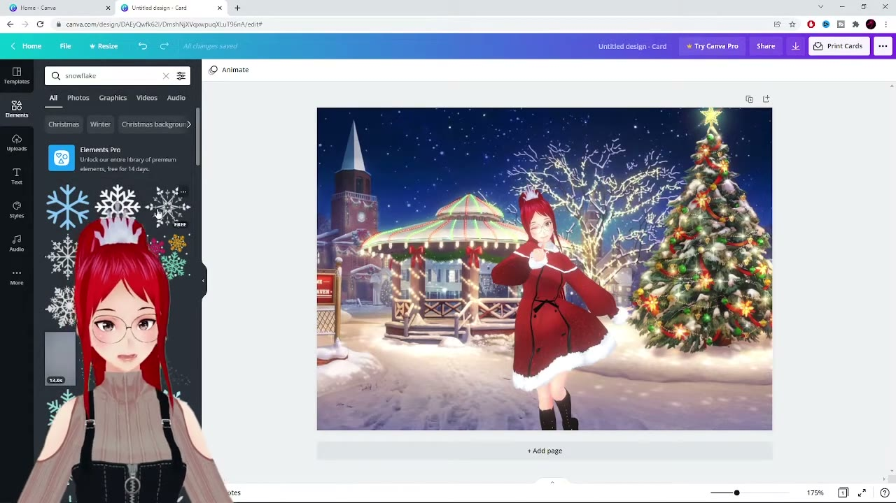
口播说把照片放进 Canva：在 Uploads 里载入，再设成背景。前一秒左侧是 Upload media，列表里有这张缩略图。这一帧照片已经铺满卡片，姿势和 4K 预览里的是同一套，摄影棚的菜单不再盖在图上。左边此时已经切到 Elements，雪花还停在面板里，没有放到照片上。
在照片上加雪花和标题
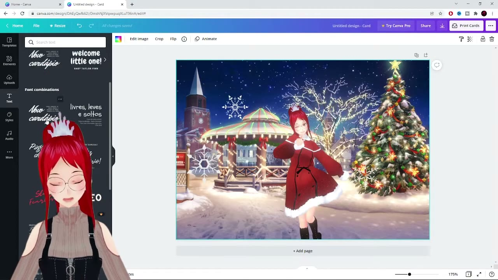
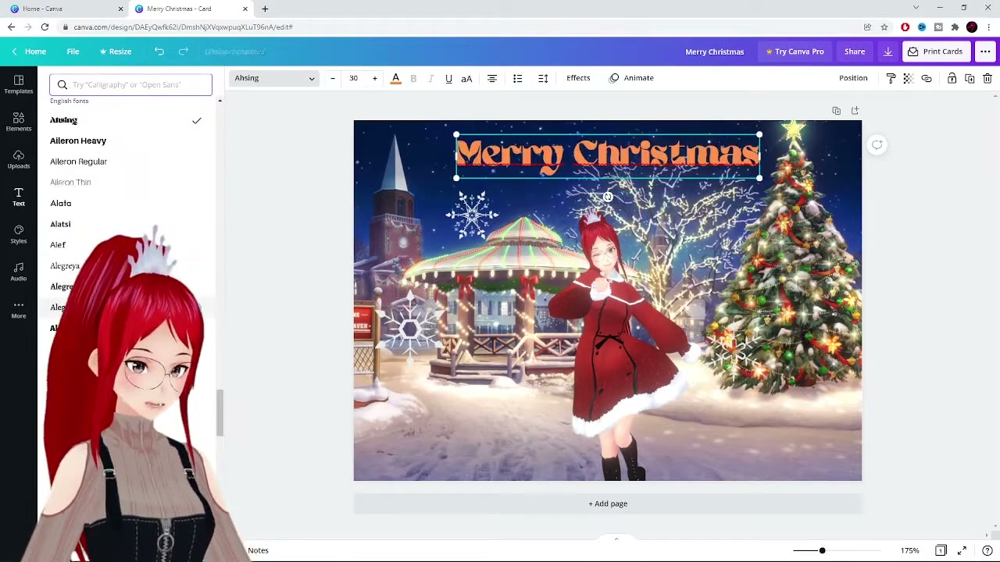
口播说在 Elements 里搜雪花，拖进画面，大小和位置可以改。接着在 Text 里加字。口播不建议用现成的多行文字组合，因为会带好几个文本框，不好删；她改加一个 heading，再换字体和颜色。画面上左边确实闪过一排现成字体组合，最后留下的是一行 Merry Christmas。口播说用右上角的下载箭头保存，也可以用他们的印刷服务。画面右上能看见下载图标和 Print Cards。